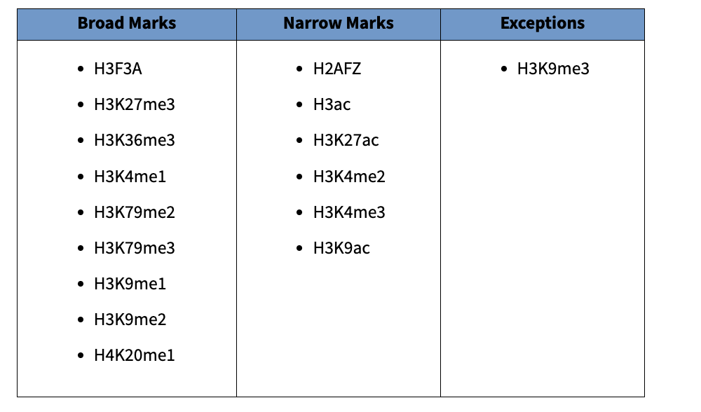

Peak Calling with MACS3 (The Summit Search)¶
MACS3 peak-calling ChIP-seq narrow-peaks broad-peaks p-value transcription-factors
1. Basic Concept (The "Heap" Hunt)¶
What is a Peak?¶
Imagine you are looking for hidden treasure on a long beach (the Genome).
- Random Reads: Sand scattered everywhere evenly (Background noise).
- A "Peak": A huge heap of sand in one specific spot.
This heap means thousands of protein molecules were bound to that exact spot of DNA.
Signal vs. Noise¶
- Signal: The Heap (Peak).
- Noise: The random thin layer of sand everywhere else (Input/Control).
MACS3 is the software that scans the beach, measures the height of the sand pile, and calculates if it is "significantly" higher than the background.
Narrow vs. Broad Peaks¶
Different histone modifications and chromatin marks create distinct peak shapes based on their biological function:

(from: Encode)¶
2. Requirements¶
Input Files¶
You need the following files in your workspace:
BAM files: Located in encode_bam/ directory
[!IMPORTANT] ENCODE Pre-processing: These BAM files from ENCODE are already deduplicated and filtered for mapping quality (MAPQ ≥ 30). This is documented in Tutorial 10. You do NOT need to run additional filtering.
3. Execution (Step-by-Step)¶
We call peaks on each replicate individually, then assess reproducibility using IDR (Irreproducible Discovery Rate). This is the ENCODE standard workflow.
Step 1: Create Output Directory¶
mkdir -p macs3_results
Step 2: H3K9ac (Narrow Peaks) - Both Replicates¶
H3K9ac (Acetylation) creates sharp, tall spikes at active promoters and enhancers.
Replicate 1:
macs3 callpeak \
-t encode_bam/H3K9ac_ENCFF534IPX.bam \
-c encode_bam/Input_ENCFF110SOB.bam \
-f BAM \
-g hs \
-n H3K9ac_ENCFF534IPX \
-p 0.01 \
--keep-dup all \
--outdir macs3_results
Replicate 2:
macs3 callpeak \
-t encode_bam/H3K9ac_ENCFF193NPE.bam \
-c encode_bam/Input_ENCFF919XCV.bam \
-f BAM \
-g hs \
-n H3K9ac_ENCFF193NPE \
-p 0.01 \
--keep-dup all \
--outdir macs3_results
Expected Outputs¶
After running MACS3, you will have:
macs3_results/
├── H3K9ac_ENCFF534IPX_peaks.narrowPeak
├── H3K9ac_ENCFF534IPX_peaks.xls
├── ... (similar files for all 6 replicates)
└── H3K9ac_idr_peaks.txt # After IDR analysis
Parameter Explanation:
-t: Treatment file (IP sample - the enriched DNA).-c: Control file (Input - background DNA).-f BAM: Input file format.-g hs: Genome size (hs= human ~2.7Gb, can also use numeric2.7e9or2.9e9for hg38).-n: Output file prefix (use the ENCODE accession for clarity).-p 0.01: P-value cutoff. Keep only peaks with p-value < 0.01 (1% significance threshold).- Why
-pinstead of-q? We use IDR (Irreproducible Discovery Rate) to filter for reproducible peaks between replicates. Starting with lenient-pthresholds captures more candidate peaks, then IDR applies stringent reproducibility filtering. This "liberal discovery + stringent validation" approach is standard for replicated ChIP-seq. --keep-dup all: For deduplicated BAM files (duplicates already removed). Use--keep-dup 1if BAMs still contain duplicates.--outdir: Output directory.
Optional Parameters:
-
-Bor--bdg: Generate bedGraph files for fragment pileup and control lambda. -
--bdg --SPMR: Combine with-Bto normalize bedGraph by signal per million reads (SPMR) -
-f BAMPE: Explicitly specify paired-end BAM format (BAMPE = BAM with PE alignment) -
--nomodel --extsize <size>: Override automatic fragment size estimation (only needed if model building fails)
[!NOTE] Summit positions for motif analysis: This tutorial does not use
--call-summitsin MACS3 because precise summit positions will be extracted during IDR analysis , where we identify reproducible peaks and derive consensus summits for motif discovery.
Step 3: H3K27me3 (Broad Peaks) - Both Replicates¶
H3K27me3 (Trimethylation) creates wide, gentle hills marking repressed chromatin domains.
Replicate 1:
macs3 callpeak \
-t encode_bam/H3K27me3_ENCFF532DQH.bam \
-c encode_bam/Input_ENCFF110SOB.bam \
-f BAM \
-g hs \
-n H3K27me3_ENCFF532DQH \
--broad -p 0.01\
--keep-dup all \
--outdir macs3_results
Replicate 2:
macs3 callpeak \
-t encode_bam/H3K27me3_ENCFF164ALR.bam \
-c encode_bam/Input_ENCFF919XCV.bam \
-f BAM \
-g hs \
-n H3K27me3_ENCFF164ALR \
--broad -p 0.01\
--keep-dup all \
--outdir macs3_results
Step 4: CEBPA (Narrow Peaks - Transcription Factor) - Both Replicates¶
Transcription factors like CEBPA bind to very specific DNA sequences, creating extremely sharp peaks.
Replicate 1:
macs3 callpeak \
-t encode_bam/ceb_ENCFF327JFG.bam \
-c encode_bam/Input_ENCFF110SOB.bam \
-f BAM \
-g hs \
-n ceb_ENCFF327JFG \
-p 0.01 \
--keep-dup all \
--outdir macs3_results
Replicate 2:
macs3 callpeak \
-t encode_bam/ceb_ENCFF744SVA.bam \
-c encode_bam/Input_ENCFF919XCV.bam \
-f BAM \
-g hs \
-n ceb_ENCFF744SVA \
-p 0.01 \
--keep-dup all \
--outdir macs3_results
4. Understanding the Outputs¶
After running the commands, inspect macs3_results/. For each sample, you'll see:
File Types¶
1. *_peaks.narrowPeak (or *_peaks.broadPeak) [BED6 + 4 (10 cols) narrow and BED6 + 3 (9 cols) broad]¶
- What is it? The final list of called peaks.
- Format: BED-like format with 10 columns:
- Columns 1-3: Chromosome, start, end
- Column 4: Peak name
- Column 5: Integer score (for display)
- Column 6: Strand (always
.for ChIP-seq) - Column 7: Fold enrichment
- Column 8: -log10(p-value)
- Column 9: -log10(q-value)
- Column 10: Summit position (relative to start)
- Use: Open in IGV or use for downstream analysis (annotation, motif finding).
View the file:
rajaishaqnabikhan@Rajas-MacBook-Pro bws % head -4 macs3_results/H3K9ac_ENCFF193NPE_peaks.narrowPeak
chr1 777980 778754 H3K9ac_ENCFF193NPE_peak_1a 67 . 3.55173 8.65761 6.72906 109
chr1 777980 778754 H3K9ac_ENCFF193NPE_peak_1b 473 . 9.73436 49.6911 47.3476 508
chr1 778874 779368 H3K9ac_ENCFF193NPE_peak_2 254 . 7.6257 27.596 25.4103 313
chr1 826684 827604 H3K9ac_ENCFF193NPE_peak_3 975 . 18.662 100.173 97.5777 717
Interpreting the columns:
- Peak
H3K9ac_ENCFF193NPE_peak_3has the highest score (975) and fold enrichment (18.7x) - Column 10 (e.g., 717 for peak_3) is the summit offset: summit is at position 826684+717 = 827401
3. *_peaks.xls¶
- What is it? Excel-friendly table with detailed peak statistics.
- Contents: All peak coordinates plus:
fold_enrichment: How many times higher than background (e.g., 10.5 = 10.5x enrichment)-log10(pvalue): Statistical significance (higher = more significant)-log10(qvalue): FDR-corrected p-value (accounts for multiple testing)- Use: Filter peaks, rank by significance, extract statistics for publication.
Example interpretation:
Peak with fold_enrichment=15.3, -log10(qvalue)=50.2
→ Signal is 15.3x higher than background
→ q-value = 10^-50.2 ≈ 6.3e-51 (extremely significant!)
4. *_model.r (narrow peaks only)¶
- What is it? R script that generates a PDF showing the shift model.
- Use: QC visualization showing fragment length estimation.
-
How to use:
Rscript macs3_results/H3K9ac_ENCFF534IPX_model.r > macs3_results/H3K9ac_ENCFF534IPX_mode.pdf
Directory Structure After Peak Calling¶
chipseq_tutorial/
├── encode_bam/ ← ENCODE BAM files (input)
│ ├── H3K9ac_ENCFF534IPX.bam
│ ├── H3K27me3_ENCFF532DQH.bam
│ ├── ceb_ENCFF327JFG.bam
│ └── ... (
├── deeptools_qc/ ← QC from deeptools
│ ├── fingerprints.pdf
│ ├── coverage_histogram.pdf
│ └── ...
└── macs3_results/ ← MACS3 outputs
├── H3K9ac_ENCFF534IPX_peaks.narrowPeak
├── H3K9ac_ENCFF534IPX_peaks.xls
├── H3K9ac_ENCFF534IPX_summits.bed
├── H3K9ac_ENCFF534IPX_model.r
├── H3K27me3_ENCFF532DQH_peaks.broadPeak
├── H3K27me3_ENCFF532DQH_peaks.xls
├── ceb_ENCFF327JFG_peaks.narrowPeak
├── ceb_ENCFF327JFG_peaks.xls
└── ...
Summary¶
You have successfully called peaks using MACS3 for:
- H3K9ac (narrow peaks, active histone mark)
- H3K27me3 (broad peaks, repressive mark)
- CEBPA (narrow peaks, transcription factor)
Peak calling strategy:
- Used
-p 0.01for lenient discovery (captures candidate peaks) - Will apply IDR filtering in Tutorial 13 for stringent validation
- No
--call-summitshere - summits extracted during IDR analysis
[!NOTE] Up Next: Calculate FRiP (Fraction of Reads in Peaks) quality metrics to validate peak enrichment, then assess reproducibility with IDR and perform motif discovery.
Directory Structure After Peak Calling¶
chipseq_tutorial/
├── bam_files_final/ ← Filtered BAM files
└── macs3_results/ ← **NEW: MACS3 peak calling outputs**
├── H3K9ac_ENCFF534IPX_peaks.narrowPeak
├── H3K9ac_ENCFF534IPX_peaks.xls
├── H3K9ac_ENCFF534IPX_summits.bed
├── H3K9ac_ENCFF534IPX_model.r
├── H3K9ac_ENCFF193NPE_peaks.narrowPeak
├── H3K9ac_ENCFF193NPE_peaks.xls
├── H3K9ac_ENCFF193NPE_summits.bed
└── H3K9ac_ENCFF193NPE_model.r